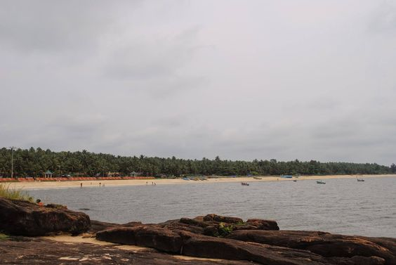
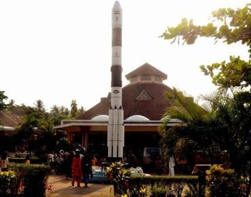

Kappad Beach
Kappad, or Kappakadavu locally, is a beach near Koyilandy, in the district Kozhikode, Kerala, India. A stone monument installed by government commemorates the "landing" by Vasco da Gama with the inscription, 'Vasco da Gama landed here, Kappakadavu, in the year 1498.

Regional Science Centre & Planetarium
Regional Science Centre & Planetarium Calicut functioning under NCSM (Govt.of India) shoulders the leading role in propelling science dissemination activities in Kerala, especially in the Malabar region. Calicut, the capital of Malabar right from the time of the Zamorin’s dynasty is now a fascinating place with unparalleled attracti including historic monuments, works of art and cultural contributions.